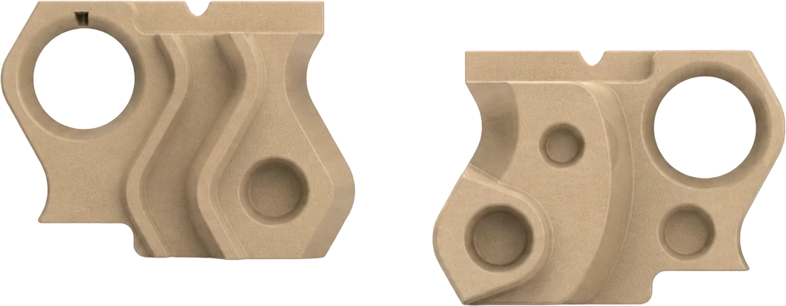

HABITARE
"Una nueva forma de habitar"
Sistema modular cerámico para transformar y adaptar el espacio a tus necesidades: piezas cerámicas, una estructura regulable y accesorios, diseñado y producido en Córdoba.

¿Qué es
Habitare?
Sistema modular cerámico para transformar y adaptar el espacio a tus necesidades.
HABITARE es un sistema compuesto por piezas cerámicas, una estructura regulable y accesorios que permite dividir, filtrar, personalizar y equipar los espacios según las necesidades de cada usuario.
Espacios que cambian necesitan límites que también puedan cambiar. Los espacios compartidos contemporáneos concentran cada vez más actividades dentro de una misma superficie.
Trabajar, descansar, reunirse, almacenar o generar privacidad pueden requerir configuraciones diferentes a lo largo del tiempo. Frente a soluciones rígidas o permanentes, HABITARE permite reorganizar el espacio mediante un límite permeable, adaptable y reversible.
Divide sin cerrar
Permite delimitar sectores y generar privacidad sin aislar completamente los ambientes.
Filtra
Sus vacíos mantienen el paso de la luz, las visuales y la relación entre ambos lados del espacio.
Se adapta
La cantidad y disposición de las columnas puede variar según las dimensiones y necesidades de cada ambiente.
Equipa
La incorporación de accesorios permite sumar nuevas funciones al sistema.
Diseño
Cordobés.
HABITARE es un sistema modular diseñado y producido en Córdoba, pensado para acompañar nuevas formas de habitar.
A través de piezas cerámicas y accesorios intercambiables, permite crear divisiones livianas, filtros visuales y configuraciones funcionales sin intervenir el espacio de manera permanente.
Más que separar ambientes, HABITARE propone transformarlas.
El módulo
Piezas de gres, pensadas para combinarse.
Cada módulo está compuesto por piezas cerámicas de gres, fabricadas mediante proceso de colada en moldes.
Su morfología permite combinar, repetir y organizar las piezas en distintas configuraciones, generando un sistema flexible y adaptable.

Cada pieza posee dos caras con morfologías diferentes, lo que permite variar la composición visual del sistema.
Esta dualidad habilita distintas configuraciones estéticas y funcionales, adaptándose a la identidad de cada espacio y a las necesidades de cada usuario.
Una solución
para espacios
que cambian
Divide sin cerrar
Genera privacidad sin aislar completamente el ambiente.
Se adapta al uso
Permite reorganizar el espacio según la actividad, el momento o la necesidad.
No requiere obra
Su sistema de instalación evita intervenciones permanentes.
Aporta identidad
La cerámica suma textura, calidez y presencia material.
¿Cómo
funciona?
HABITARE se organiza a partir de guías superior e inferior que permiten montar columnas verticales de piezas cerámicas. El sistema se instala sin obra y permite configurar divisiones, filtros visuales, soportes o sectores funcionales dentro de un mismo ambiente.
Instalá las guías
Se colocan una guía superior y una inferior para definir la estructura del sistema.
Armá las columnas
Las piezas cerámicas se organizan verticalmente, a través de un encastre, según la configuración deseada.
Personalizá el uso
El sistema permite incorporar accesorios y adaptar la composición a distintas actividades.